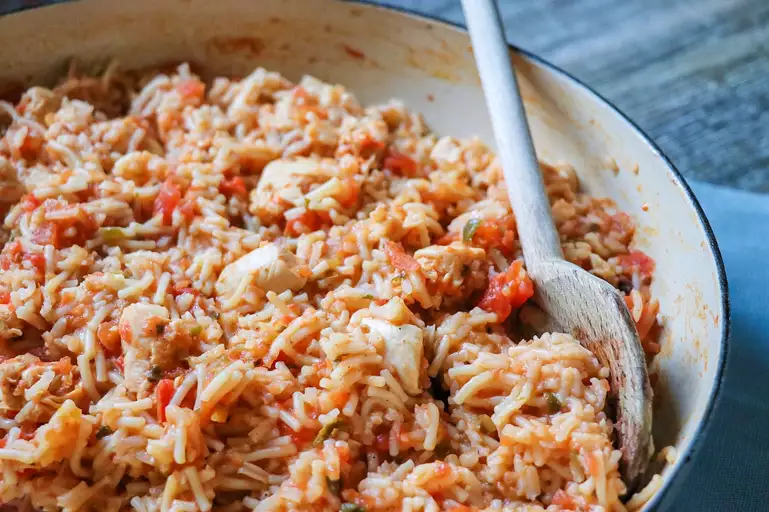

Spanish Rice Chicken

Description
This recipe is so quick and is so very simple! It is perfect for making in a recreational vehicle (RV) galley for a quick, delicious dinner on the road and on the go! Andale, pues!
Ingredients
- 1 (6.8 ounce) package Spanish-style rice mix
- 1 tablespoon butter
- 2 cups hot water
- 1 skinless, boneless chicken breast half - cut into cubes
- 1 cup salsa
- 1 (14.5 ounce) can diced tomatoes with green chile peppers
Directions
- In a large skillet over medium heat prepare rice according to package directions, using the butter/margarine to brown the vermicelli and rice to a golden brown. Add the water, chicken, salsa and tomatoes and bring all to a boil. Cover skillet, reduce heat and let simmer for approximately 25 to 30 minutes, or until all liquid is absorbed.